Delivering a digital charging experience for Petalite–an award winning next-gen electric vehicle charging company.
Big Picture
Petalite had developed a state of the art charging device that needed a driver user interface to match. Crafted to communicate, we designed a driver experience that keeps drivers oriented throughout every step of their charging experience.
Role
Working hands-on as Design Director, I set the visual direction, defined the overall experience, designed the interface and managed client needs. Leading a small team, I focused on building trust and keeping the client team close to the process each step of the way.
Approach
Designing from the ground up we ran surveys, visited charging bays and mapped a driver-first journey map which served as a shared canvas for identifying pain points, moments of delight, and design opportunities. From that we were able to design a flow and design system that was clear, simple and scaleable.
Outcome
Our work with Petalite helped them secure further funding, forge key partnerships and advance their product development. Our initial concept led to repeat work and ongoing conversations on future UX improvements.
Credits
Hi Shine (Design support), 3D design by R/AD.
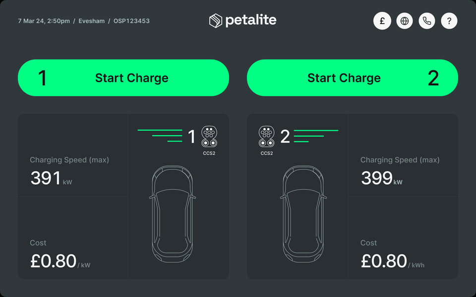
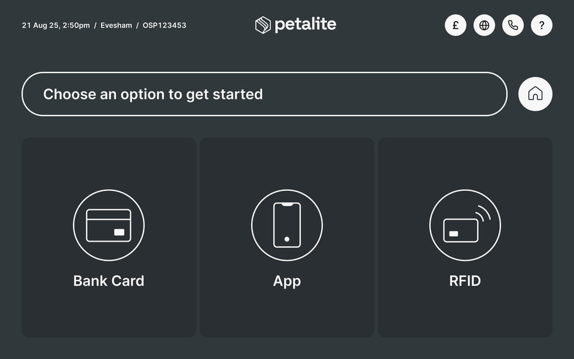
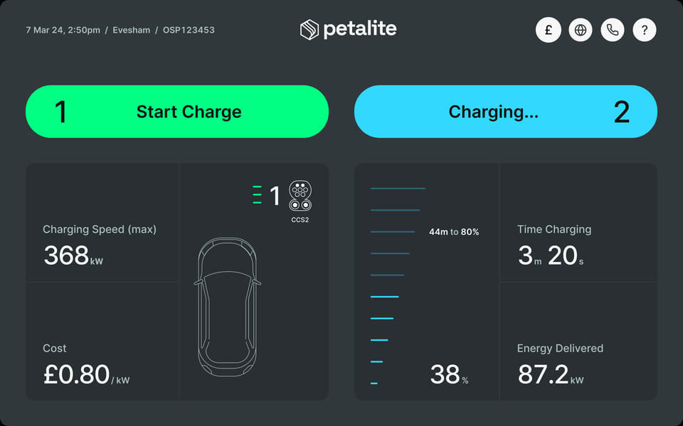
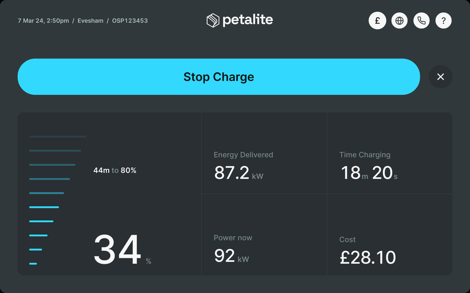
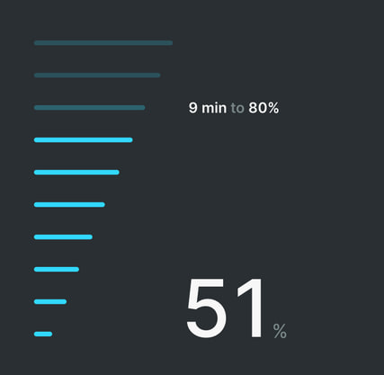
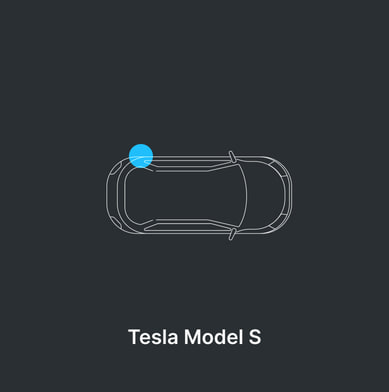
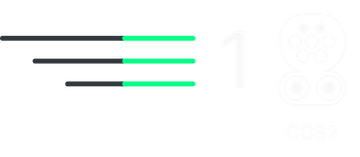
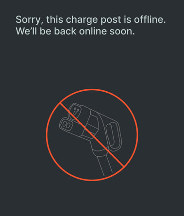
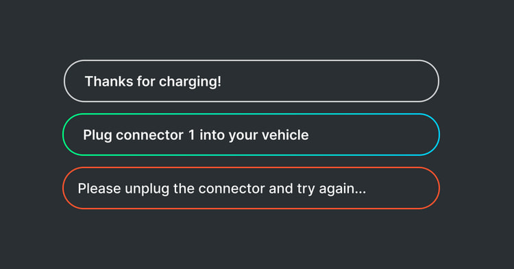
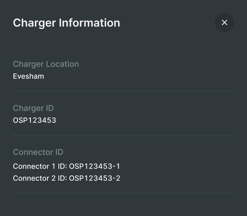
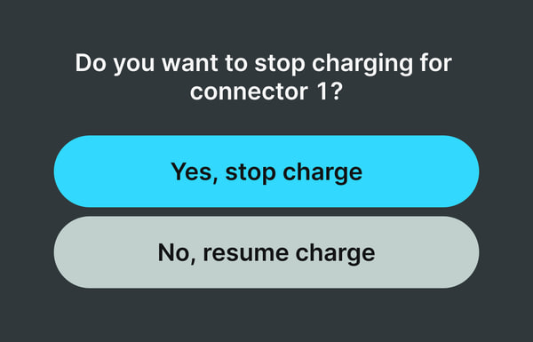
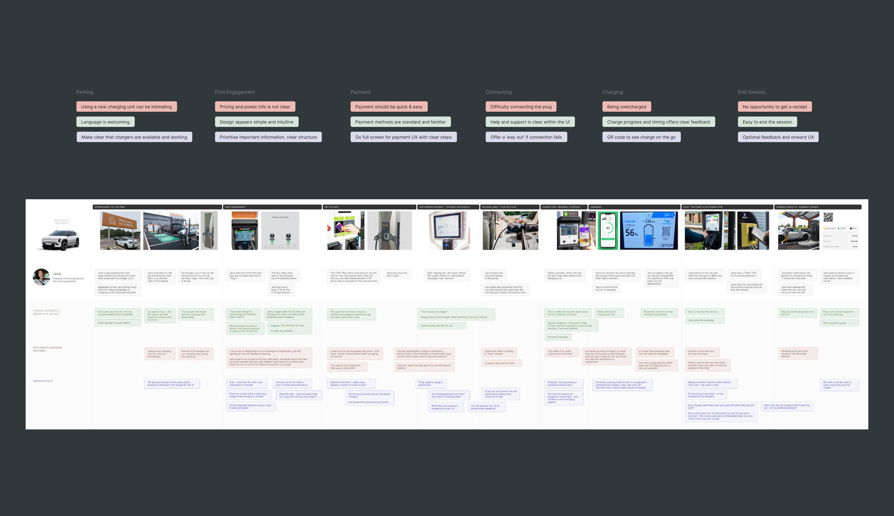
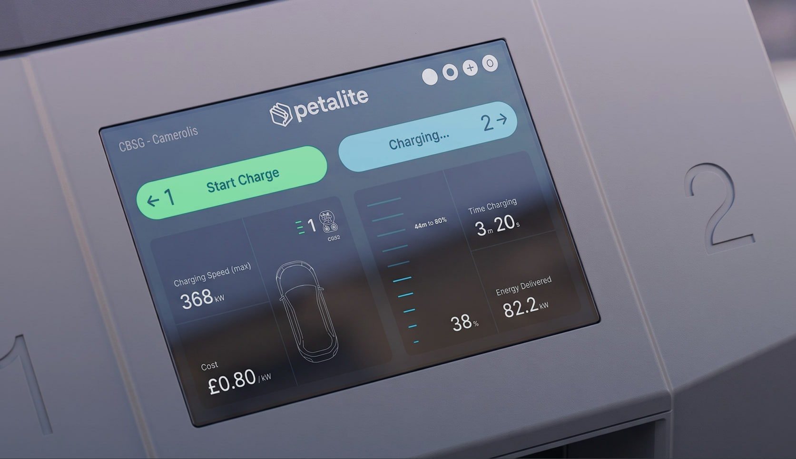
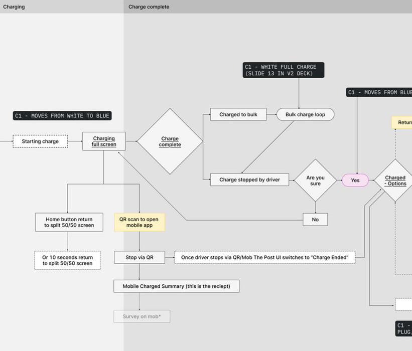
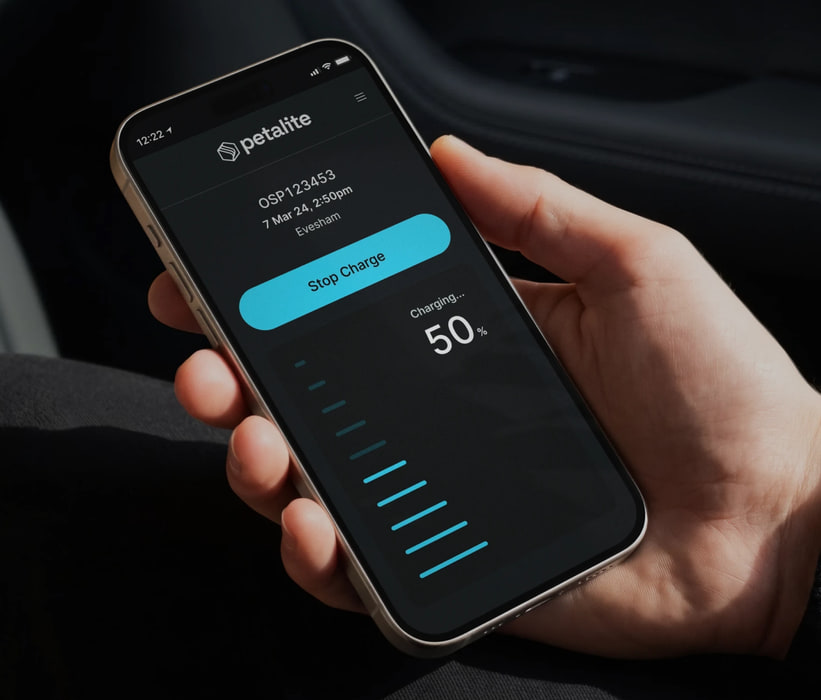